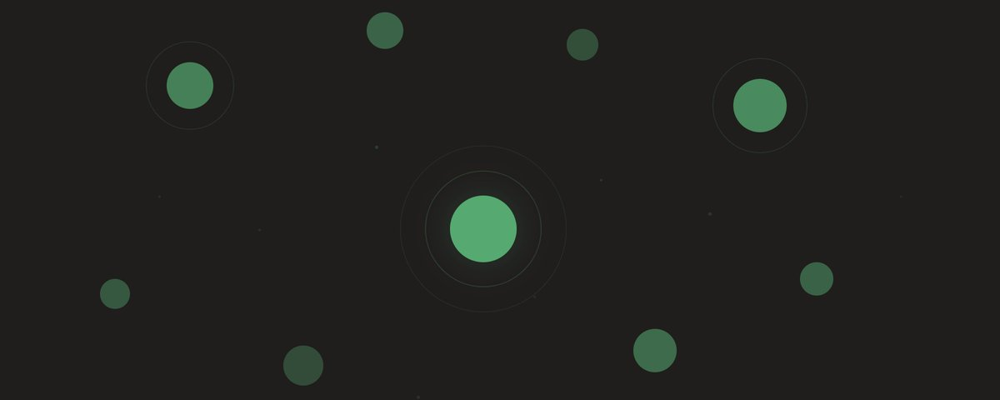

Privacy Without Quantum Resistance Is a Ticking Clock

Most privacy protocols are protecting your transactions with cryptography that has an expiration date. And the clock is already ticking.
Justin Thaler calls privacy chains "the exception" [1]. It's the one part of crypto directly exposed to harvest-now, decrypt-later (HNDL) attacks. Why? Because privacy protocols place encrypted secrets on a public, immutable ledger. Those secrets can't be rotated, patched, or recalled. They sit there permanently, waiting for a sufficiently powerful quantum computer to break the underlying cryptography.
HNDL isn't a theoretical concern for some distant future. Nation-states are already archiving encrypted data at scale. The threat model isn't "what happens when quantum computers arrive". It's "what is already being collected right now, and what will it reveal."
Zcash Case Study
Consider Zcash's protocol, widely regarded as one of the most advanced privacy implementations in crypto. Its security depends on the Halo 2 proof system, Pedersen commitments, and binding signatures, all of which rely on the discrete log problem over elliptic curves (the Pallas/Vesta cycle).
A cryptographically relevant quantum computer (CRQC) doesn't just threaten to decrypt shielded transactions. It breaks the entire cryptographic stack:
- Proof soundness collapses. Halo 2's Inner Product Argument relies on discrete log hardness on the Vesta curve. Shor's algorithm solves this. With soundness broken, a malicious prover can construct a valid-looking proof for any false statement, including one that claims ownership of funds that don't exist.
- Pedersen commitment binding breaks. The value commitments that enforce "you can't spend more than you have" are computationally binding, not information-theoretically binding. They rely on the discrete log relationship between two curve points being unknown. A CRQC computes that relationship directly, meaning an attacker can open any commitment to any value.
- Binding and spend authorization signatures are forgeable. RedPallas, the Schnorr-like signature scheme used for both transaction balance checks and spend authorization, is directly broken by Shor's algorithm. An attacker can forge signatures for any key, bypassing both the transaction-level balance check and individual spend authorization.
The result is a mint-from-nothing attack: an attacker constructs a transaction that creates arbitrary value from a dummy spend, forges every proof and signature needed to make it look legitimate, and appends it to the Orchard commitment tree. Because shielded pools hide amounts, nobody can see the inflation happened. The total supply of Zcash isn't publicly auditable. You can't sum up note values because they're encrypted. The counterfeiting only becomes visible when someone tries to unshield more ZEC than should exist, which could take a long time to manifest.
The result is silent, unlimited counterfeiting.
Why Privacy Can't "Migrate Later"
The common response to quantum risk is "we'll migrate when we need to." For most of crypto, that's arguably true. Digital signatures can be upgraded, and old transactions aren't retroactively compromised.
Privacy protocols don't have that luxury, and for two independent reasons.
The counterfeiting damage is already done. Once forged proofs mint tokens into a shielded pool, that counterfeit value is permanently embedded in the commitment tree. A post-quantum upgrade to the proof system stops future forgeries, but it can't detect or remove the counterfeit tokens already created. In a pool where supply isn't auditable, the damage may not even be recognized, let alone reversed.
The encrypted data is already harvested. If a shielded transaction is encrypted with elliptic curve cryptography and that ciphertext sits on a public, immutable ledger, can it really be considered private today? A quantum computer that is able to decrypt retroactively exposes amounts, recipients, and transaction graphs for the entire history of the protocol. You can't rotate on-chain ciphertext, meaning you can't un-expose a private transaction.
One attack counterfeits value and the other destroys privacy, but neither is reversible. Worse yet, both begin before a single line of code is migrated.
This is why cryptographers recommend that privacy chains "prioritize a transition sooner" than any other blockchain category. Not signatures. Not consensus. Privacy. It's the only category which warrants immediate action.
The Timeline Is Compressing
New research just reduced the qubit requirement for breaking 256-bit elliptic curve cryptography to approximately 1,098 logical qubits, a 2x improvement over prior estimates and a 100x improvement from three years ago [2].
The urgency is reflected in who's moving. Google has published a 2029 timeline for full post-quantum cryptography migration [3], explicitly citing store-now-decrypt-later as a threat relevant today. Ethereum's protocol team has set the same target, see Justin Drake's strawmap roadmap which places "post-quantum L1" among five north stars, with seven forks planned through 2029 to get there [4].
Building for the Post-Quantum Era
This is why we built QCash: quantum-safe private transfers on Solana, built from the ground up with post-quantum cryptographic primitives.
- Kyber-768 encryption protects accounts with NIST-standardized post-quantum cryptography.
- STARK proofs replace elliptic curve-based SNARKs: hash-based, no trusted setup, quantum-resistant.
- Signature-free transactions prove ownership through quantum-safe zero-knowledge proofs of decryption, not digital signatures.
- No protocol changes required because QCash is deployable as a standard Solana program today.
In a nutshell, we're building privacy with no expiration date.
Sources
- Justin Thaler, “Quantum Computing and Blockchains”, X: x.com/SuccinctJT/status/1997030431498121250
- “Reducing the Number of Qubits in Quantum Discrete Logarithms on Elliptic Curves”, ePrint: eprint.iacr.org/2026/280
- Google, “Quantum frontiers may be closer than they appear”: blog.google/.../cryptography-migration-timeline/
- Justin Drake, X: x.com/drakefjustin/status/2026755969540108659